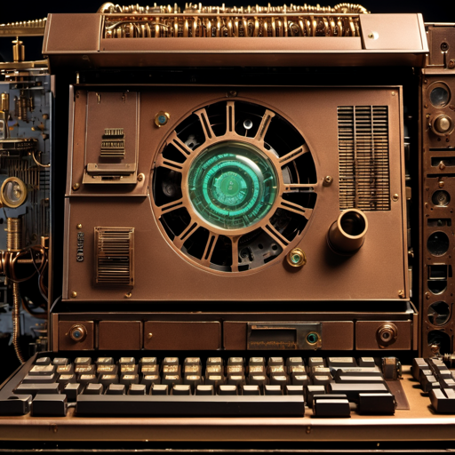

Antonio Cadavid
y la cibercultura
Primer acercamiento
Ají en Mortero
En un mortero, agrega los ajíes picantes junto con los dientes de ajo pelados y troceados. Comienza a moler los ajíes y el ajo en el mortero con un movimiento circular utilizando el mano del mortero. Continúa machacando hasta obtener una pasta suave y bien combinada. Agrega sal al gusto y mezcla bien. Si deseas un toque de acidez, exprime 1-2 cucharadas de jugo de limón sobre la mezcla y mezcla nuevamente. Si deseas una consistencia más suave, puedes agregar aceite vegetal gradualmente mientras continúas mezclando hasta alcanzar la consistencia deseada. Por último, si deseas añadir pimienta, agrega pimienta negra molida al gusto y mezcla bien para incorporarla a la mezcla de ají en mortero.